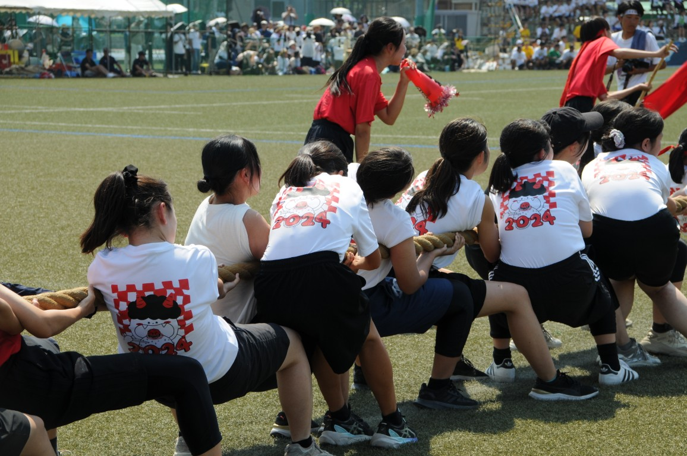
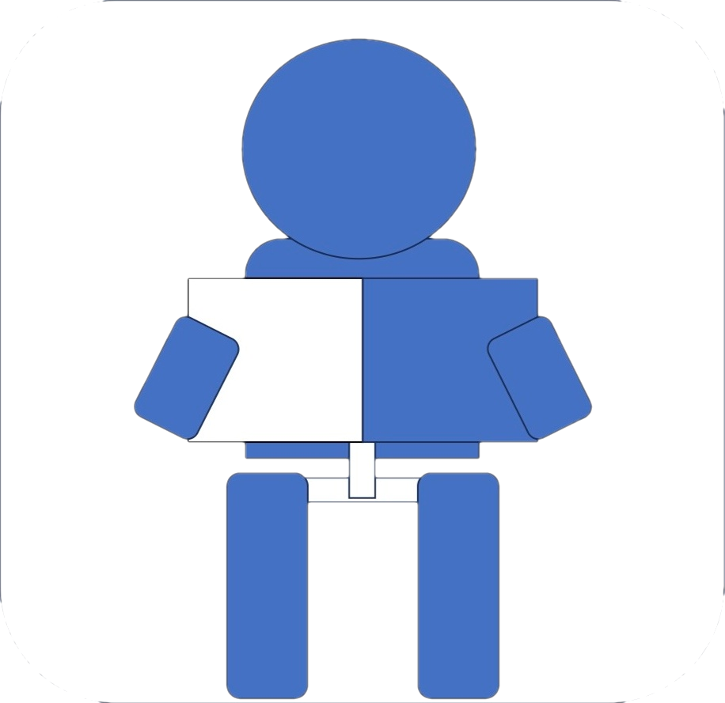

Program
-
陸上α
8:25 ～ 8:40大運動会、開幕！最初の競技はリレー。加速する足音とバトンが、勝負の火蓋を切る！
-
陸上β
14:32 ～ 14:55跳んで、まわって、美白になって！？大運動会の大人気障害物競走！予測不可能なこの競技を一瞬たりとも見逃すな！
-
陸上γ
15:25 ～ 15:37大運動会最後の競技はスウェーデンリレーとブロック対抗リレー。すべての想いがバトンを経てブロック長へとつながっていく。
-
綱引き
<予選> 10:28 ～ 10:53
<決勝> 13:44 ～ 13:59各ブロック男女80人ずつと最後尾のアンカーマンで綱を引き合う。「音頭取り」や「旗持ち」も選手たちを鼓舞する大事な仲間！多人数のパワーと熱い掛け声が見どころ！
-

騎馬戦
<予選> 10:57 ～ 11:12
<決勝> 13:22 ～ 13:404人で1つの騎馬を組み、1対1でぶつかり合う。花形種目でもあるこの競技の激しさと緊張感は場を圧巻で包み込む。互いの意地をかけた戦の行方は果たして……。ブロックごとに異なる戦術に注目！
-
棒引き
<予選> 8:43 ～ 8:55
<決勝> 14:59 ～ 15:0990秒の間に12本の棒を自陣に引き合う。真ん中にあるスペシャル棒は得点が2倍に！一本一本に白熱したドラマが！どの棒も見逃せない！
-
棒倒し
<予選> 9:49 ～ 9:59
<決勝> 15:13 ～ 15:23これはただ棒を倒すだけの力勝負ではない。タイミング、配置、動きの読み合い――すべてが勝敗を左右する。必死で走り、叫び、ぶつかり合う修猷男児の本気をご覧あれ。
-
大帽走
9:34 ～ 9:441、2年女子が10人11脚で縄を跳び、コースを駆け抜ける！バトンの代わりに大きな帽子をかぶって走るのが特徴。息の合った走りに注目！
-
タンブリング
8:57 ～ 9:31
青→白→黄→赤男子全員出場 ｡各ブロックのテーマを自らで体現し、その勇姿を競い合う ｡この夏を懸け覚悟のもと造り上げた演技を、修猷男児の熱い想いを、その胸に刻み込め。
-
創作ダンス
10:01 ～ 10:23
赤→青→黄→白女子全員出場。ブロックごとにテーマを定め、独自に創作したダンスでその表現力を競う。全員で表情豊かに踊る様子は、まさに私たちのエネルギーの結晶である。
-

応援コンテスト
12:35 ～ 13:12
赤→黄→白→青修猷大運動会の中で、唯一全ブロック生が参加する競技。約３００人がパネルによって作り出す、想いの込められた文字や絵は迫力満点！各ブロック、それぞれの想いを表す特パネにもご注目。応コン大幹たち、そして全ブロック生がこの日に向けて創り上げてきた作品をご覧あれ。
-
バック
12:35 ～ 13:12生徒を見守るスタンドに掲げられるのはバックと呼ばれる巨大なキャンバス。第2バックが降りる瞬間は、生徒の2カ月間の全ての想いが一瞬に集約される圧巻のひととき、最後まで目を離すな。
-

エール
11:14 ～ 11:45
<エールっこ>黄→赤→青→白→全体
<エーラー>赤→青→白→黄→全体演舞の「エーラー」と、チアダンスの「エールっこ」が、２カ月かけて作り上げた完成度の高いエールで選手たちを応援。エーラーの迫真の演舞には心を動かされること間違いなし！
エールっこの軽やかなダンスとはじける笑顔はその場の全員に元気と活力を与えてくれる！
Blocks
RED
{kind=link}
俺たちのタンブテーマは、「栄華の夢」。栄華の夢とは、豪華で華やかな時がまるで夢のように儚く、すぐに消えてしまう様子を表す言葉である。このテーマのモデルとなったのは真田幸村である。真田幸村が生涯忠誠を誓った豊臣家は、一度は天下をとり栄華を得たものの、ほどなくして凋落した。その豊臣家最後の戦いである大坂夏の陣を舞台に孤軍奮闘した真田幸村は、最後はその名声と共に消え去った。その様相は、豪華で華やかな時がまるで夢のように儚く、すぐに消えてしまう「栄華の夢」、俺たちのテーマそのものである。
誰もが知る音楽家、ルートヴィヒ・ヴァン・ベートーヴェンは数々の名曲を生み出した楽聖である。音楽家として致命的な難聴を抱えながらも曲を作り続けた彼には、音楽への深い愛と情熱があった。私たちはダンスへの愛と情熱を彼の音楽にのせ、表現を心から楽しみ、魂を込めて踊る。
紅色に染まった大空さえも凌ぐ、というこの言葉の通り、俺たちの本気は限界を超える。どんな壁も俺たちを阻むことはできない。あとは、赤夏を駆け抜けた仲間と共に史上最高の応コンを創るだけだ。夜明けの刻は来た。声は決意と覚悟を乗せて空に響き、赫く燃え上がる情熱は、宙をも越えていく。
ー神は自分のかたちに人を創造された。すなわち、神のかたちに創造し…ー『創世記』第1章17節 ;天地を創造し、地上に恵みをもたらす神のごとく、地を荒らし、畏怖をも集める鬼のごとく…。赤ブロックの創造する、荘厳かつ強大なバックの世界へ、さあ、ゆこう！
BLUE
{kind=link}
艟艨とは海上での戦において先陣を切って敵の艦隊に突入していく船のことである。それはまるで計り知れない巨大な壁にも果敢に向かっていく『挑戦』する者の姿のように見える。我々はそれぞれがこの夏を通して得た『挑戦』という言葉の定義を１つの艟艨に乗せて、新たな修猷のタンブリングをつくろうと努力してきた。挑戦する者、青ブロ男児の勇姿を目に焼きつけて欲しい。
世の中には親や周りの人たちからの評価を気にしてやりたいことを諦め、個性を隠して自分が分からなくなっている人が数え切れないほどいる。そんな人たちのために自分の好きなように生きることの素晴らしさを表現する。誰もが無限の可能性と想像力を持っていることを伝えて、見ている人と踊っている人に未来への希望と自分の気持ちに正直になる勇気を与えたい。
青ブロック生全員が熱い気持ちを持ち、大きな青空に翔び立つような爽快でかつ豪快なイメージを込めたスローガンだ。また「舵」はブロックスローガンである「舵凱」からとったものであり、大運動会における青ブロックの勝利の舵を取るという意味も込めている。
『凱心』は敵を見据えて「戒心」する狼が「会心」の一撃を与え、「凱」を掴む姿を表す。『碧靂』は青く輝く宝石を表わす「碧」と激しい雷鳴を意味する「霹靂」を合わせた。第２バックでは、青い霹靂と共に敵を撃ち倒した狼が登場する。この狼のように、日々の練習で闘志を高め、己を宝石のように磨いた青ブロック生は、青天の「霹靂」の如く誰にも予想できないほどの大きな感動をもたらし、他を圧倒し完全優勝を果たす。
WHITE

世の中には、偶然の成功が溢れている。果たしてそこに価値はあるのだろうか。私達は、自分自身の力で実を結ぶことにこそ価値があると思う。真に努力をした者は、真に価値のある結果を手に入れることが出来る。修猷生はそうであって欲しい。これからの人生、大きな困難が私たちの前に幾度となく立ちはだかるだろう。決して挫けるな。乗り越えた先には、価値のある結果と、強く美しい自分が待っている。このタンブリングが、その象徴となる。白の男達が、今咲き誇る。
1970年、アジア初開催だった「大阪万博」では、人と人が出会い、未来への夢が語られた。そして2025年。大阪の地で万博が開催され、どちらも「いのち」というキーワードで繋がっている。命は偶然ではなく、誰かの願いや行動によってつながれてきた。そして今、私たちもまた希望を持って「命のバトン」をつなぐ。「命のバトン」が過去から未来へと脈々と受け継がれる様子、未来への希望をダンスで表現する。
必勝や必笑など様々な前向きな意味が込められている。また、今年は応コンでさらなる高みへ飛び立ち歴代最高の応コンを作りたいという思いから「翔」という漢字を使った。さらに今年の白ブロックのテーマが的皪で「光り輝く」という意味があるため「燿」という漢字を使い応コンでも全員が輝けるようなテーマにした。この言葉には今の自分たちの決意と情熱が詰まっている。このテーマで必ず優勝を掴み取る。
WHITEのバックは、ただの素晴らしい絵では終わらせない。とてつもない熱意と勢いのあるこの白ブロックに、背中から追い風を起こし、さらに勢いを加速させて、私たちを勝利に導いてくれる。だから白ブロックは後ろを気にせず、勝利に向かって進むことが出来る。そんなバックが白にはついている。
YELLOW

数千万年以上も前の天然脂が化石化した宝石である琥珀のように歴史に刻まれた修猷のタンブリングは次の世代へと導かなくてはならないものだと我々は考える。その想いを“琥導”というテーマにこめた。我々がタンブリングを通じて成長し、それぞれの道（個道）を、己が言じる道（己道）を歩んで行こうとする姿や、我々の生命の鼓動を感じてほしい。
仲間との衝突、民衆からの批判、拠点の焼失----- 。伝説の興行師と謳われるP.Tバーナムは、多くの障壁を乗り越え地上最大のshowを大成した。多くの困難に見舞われる中でも理想を追い求め続ける果敢な姿と仲間と共に居られる喜びを体現する。
「千輪」という花火のように、それぞれが花を咲かせるために、我々は限界を超えて叫ぶ ----- 夏の試練を乗り越えて。そして、修猷大運動会を迎えた今、333の魂は光を放ち始める。見よ、我々の魂の叫びを。新たな伝説を。一人ひとりが輝く、歴史に残る黄ブロック333人の応コンを目に焼き付けてくれ！
虎燿凱花とは、虎が吠えること、転じて英雄・豪傑が世に出て活躍することを意味する「虎嘯」、ブロック生一人ひとりが成長し大きな花を咲かせる「開花」の2つを合わせたものだ。そこに、光り輝くという意味の「燿」。勝鬨、勝利を表す「凱」をあて、虎、星、月、花がそれぞれの光を放ち輝くことで、歴代一のバックとなり、勝鬨をあげる。その姿を表したテーマである。